Ciò che ci contraddistingue
L'aspetto wild
Siamo convinte che il Bengala non debba essere solo un gatto maculato, ma che debba avere quel "qualcosa in più" di selvatico che richiama il piccolo felino da cui la razza ha avuto origine: il Prionailurus bengalensis, il gatto leopardo asiatico.
Bengala e leopardo asiatico a confronto
I tratti del leopardo asiatico che vogliamo esaltare
Sono le caratteristiche che noi allevatori cerchiamo di ritrovare nei nostri gatti domestici. In ogni confronto, a sinistra il leopardo asiatico e a destra un gatto Rajmangal.
Corpo e proporzioni
- Corpo esile e flessuoso, ma robusto.
- Zampe posteriori leggermente più lunghe delle anteriori.
- Testa piccola in proporzione al corpo.
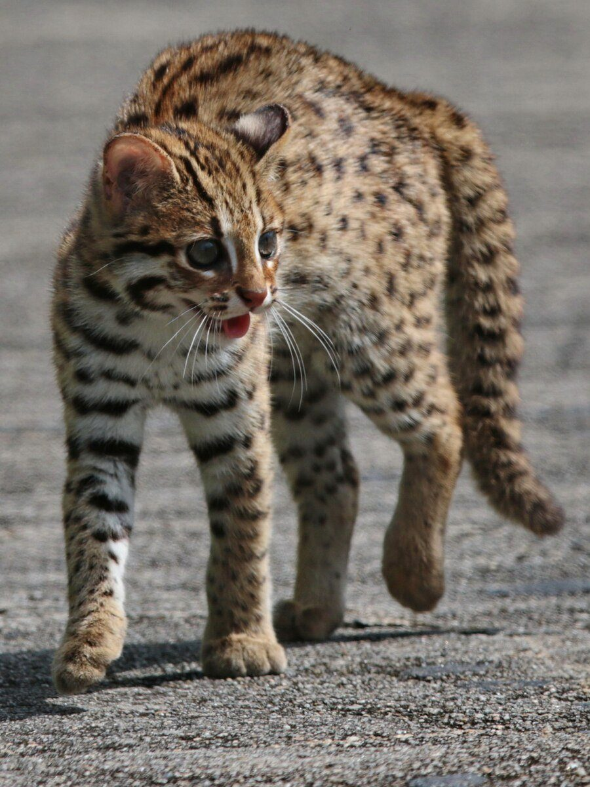
Foto Ian Dugdale, CC BY 4.0, via Wikimedia Commons

Testa ed espressione
- Occhi grandi e dominanti, posizionati nella parte bassa della testa: la fronte risulta alta.
- Naso largo e prominente, il cosiddetto puffy nose.
- Mento forte.
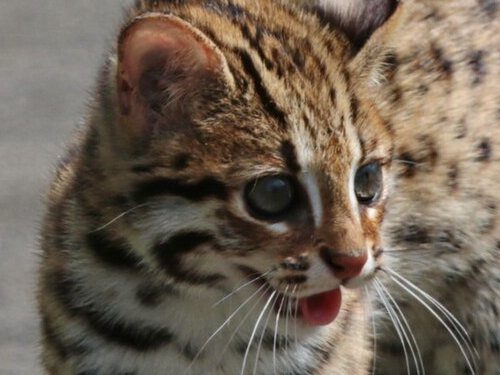
Foto Ian Dugdale, CC BY 4.0, via Wikimedia Commons
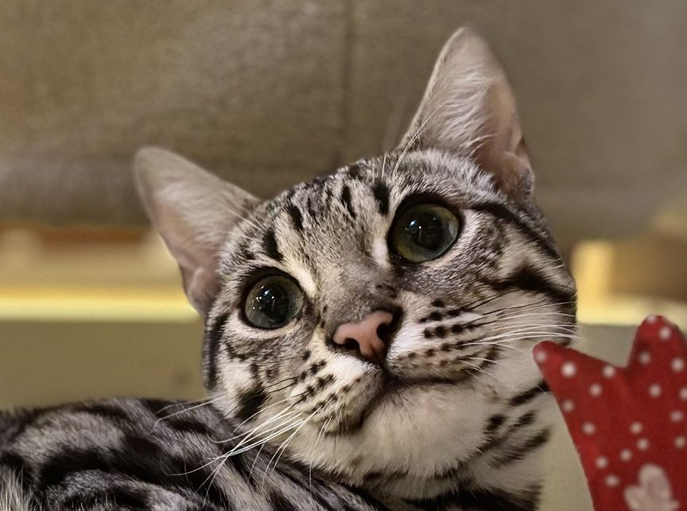
Il disegno della fronte
- Righe parallele sulla fronte.
- Nessuna "M", il segno tipico dei gatti tabby che vogliamo evitare.
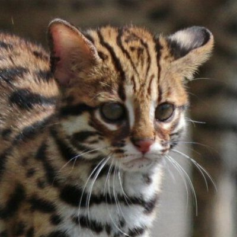
Foto Ian Dugdale, CC BY 4.0, via Wikimedia Commons
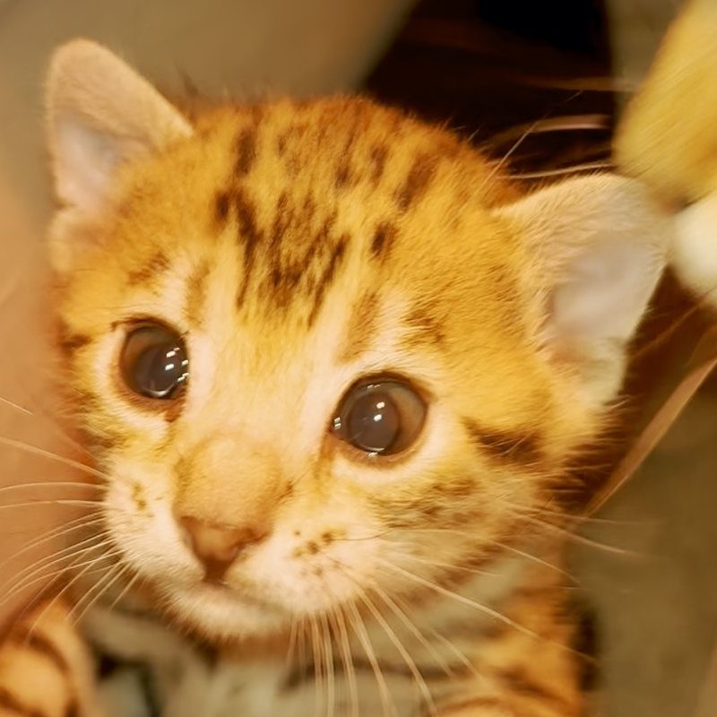
Profilo
- Profilo diritto.
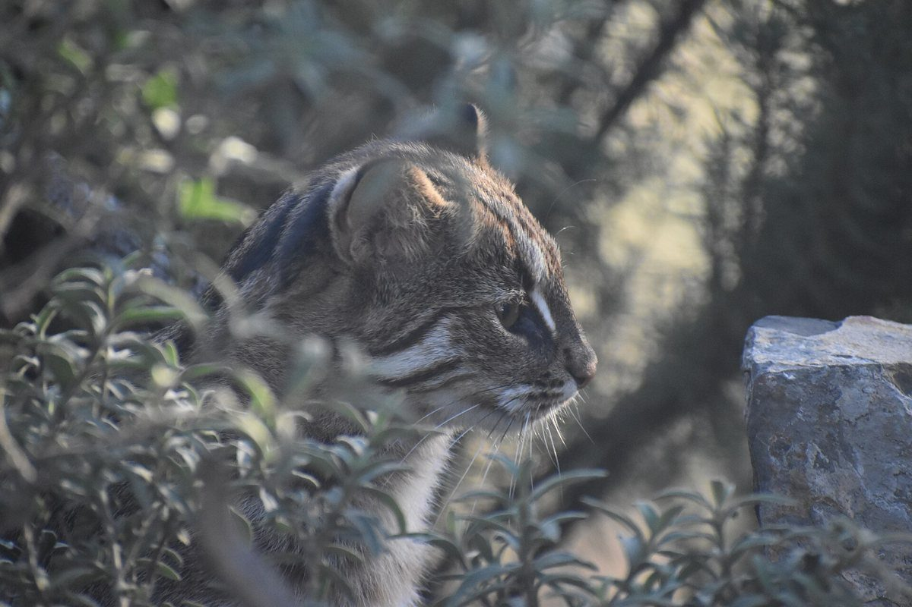
Foto Tylwyth Eldar, CC BY-SA 4.0, via Wikimedia Commons
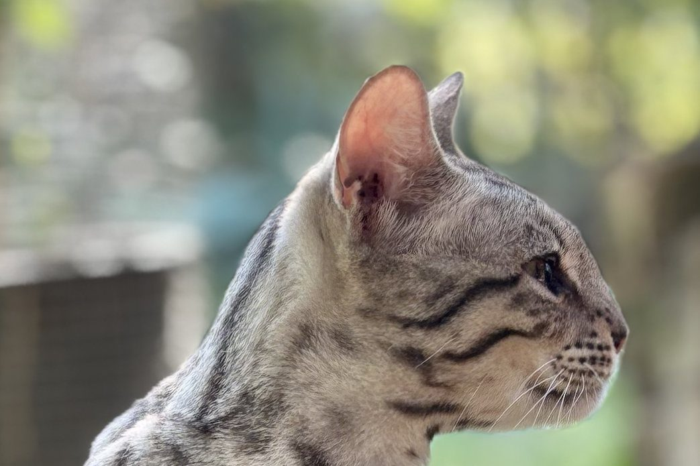
Orecchie
- Orecchie piccole, arrotondate, a base larga.
- Attaccate lateralmente alla testa, mai dritte in cima.
- Apprezzati gli ocelli: le macchie chiare sul retro delle orecchie, ben visibili nel leopardo asiatico.
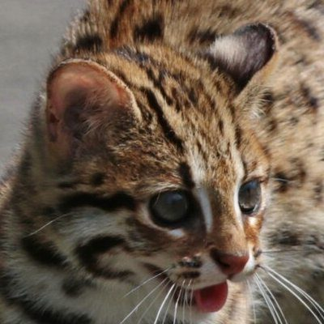
Foto Ian Dugdale, CC BY 4.0, via Wikimedia Commons
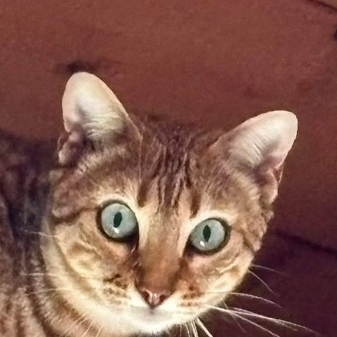
Mantello e zampe
- Rosette o macchie a "punta di freccia", meglio ancora a "zampa di leopardo" (pawprint), con andamento orizzontale.
- Pancia nettamente più chiara del dorso.
- Zampe maculate, senza le strisce tipiche del disegno tabby.
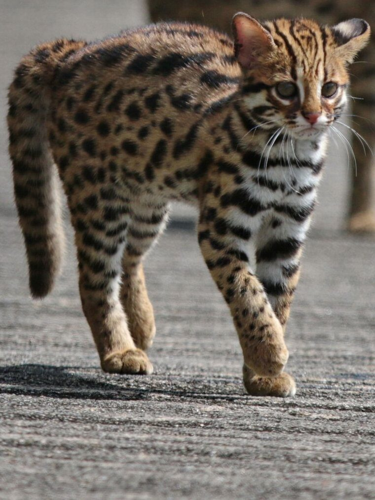
Foto Ian Dugdale, CC BY 4.0, via Wikimedia Commons

Coda
- Coda grossa e portata bassa.
- Coda maculata.
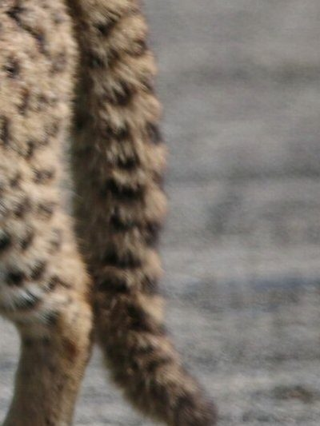
Foto Ian Dugdale, CC BY 4.0, via Wikimedia Commons
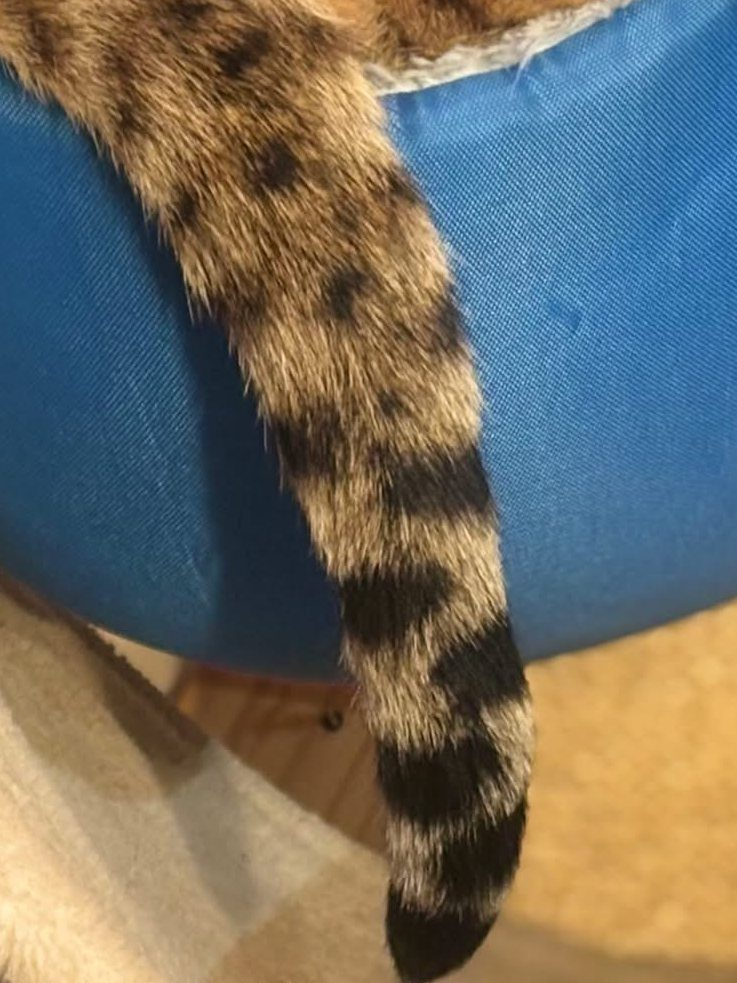
Un esempio completo? Guarda la scheda di Nireo, detto Narcos.
Senza dimenticare il resto
Aspetto sì, ma mai a scapito di salute e carattere
L'aspetto è una delle quattro priorità del nostro allevamento, insieme a salute, benessere e carattere. Un gatto bellissimo ma ansioso o non in salute non entra nel nostro programma.
Hai trovato il Bengala che cercavi?
Raccontaci di te: ti rispondiamo tutti i giorni, indicativamente dalle 10 alle 18.